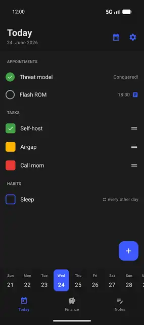

Mushotoku
قراءة وكتابة
Mushotoku (無所得) is a Zen term for acting without grasping for a result. It's a deliberately odd name for a productivity app — and that's the point. Most productivity apps want you to optimize every minute and defend every streak. Mushotoku goes the other way: work out the few things that actually ma
✓ ترخيص مفتوح (GPL-3.0-or-later) · آخر تحديث: 2026-07-26
1.4الإصدار
33.3 MBالحجم
GPL-3.0-or-laterالرخصة
Open in Kanzتحميل APK (33.3 MB)
Download APK
SHA-256: 8a6aa173c34462df28016947633582e8853f977ee74111b7c2ce8d7d25198200

امسح الكود لفتح صفحة التطبيق
Scan to open this app page
لو كنز مش متثبت عندك: نزّل متجر كنز.
Not installed? Get the Kanz store.